Free to forkNo licence and no copyright claim: build this game under your own name, or lift one idea from it. Why?
Game overview
Auto Art Chess is a chess game that plays itself, badly and beautifully. Two computer players in randomly chosen colors take turns on a board in its own random tint. Every piece that moves leaves a permanent trail of its team's paint, every captured piece bursts into a splash and flies off the board, and when a king finally falls, the board is a finished painting you can save.
It's a small, calm thing: a web page that starts playing the moment it opens, with no sound and nothing to learn. Leave it running like a lava lamp on a second screen, or watch one match to the end and keep the picture if you like it.
The pieces move by the real rules of chess. The players just don't care who wins: they choose their moves by coin toss.
Target audience
People who like lava lamps, fish tanks, screensavers and generative art, and chess fans who'd enjoy watching their game played with complete abandon.
They want something pretty and gently surprising to look at, without having to do anything for it.
The interface is four buttons. You never have to touch them.
Game's purpose
Beauty: every match ends as a picture nobody has seen before.
Rest: slow, eased movement, quiet colors and no sound, to watch or half-watch.
Whim and silliness: kings fall to random pawns, and beaten pieces go flying off the screen.
It deliberately avoids draining attention: it needs no input, and nothing is lost by looking away.
Core concept
Chess is the classic contest: two minds trying to defeat each other, where only the result matters.
Here the result is a picture, and the moves are the brushstrokes. The two players aren't opponents so much as two painters taking turns on one canvas.
Nobody wins anything that lasts. What lasts is the image, if you choose to keep it.
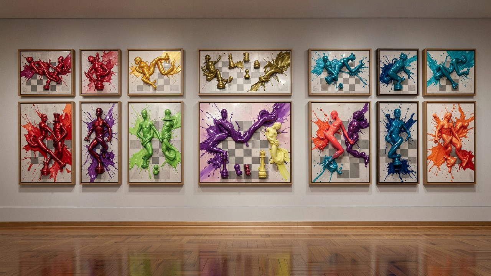
"Every match picks new colors for the board, the background and both teams, so no two canvases hang alike."
The canvas
There's no story here, and that's on purpose. What there is instead is a canvas with its own rules.
The board
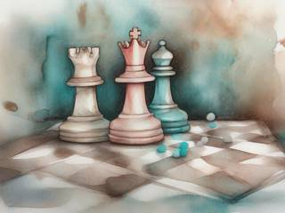
An ordinary eight-by-eight chessboard fills the right side of the window, with a narrow column of labels and buttons on the left. The board can take any hue, but always a muted one: the dark squares stay very dark and the light squares nearly white, so the paint always stands out. The background around it is another hue, kept dim.
Two teams
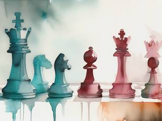
Each match rolls a color for each team: any hue, at a strong saturation, one darker and one lighter. The second team always takes a hue offset from the first, so they never blend. The pieces are one set of white shapes, tinted to their team.
Each team is named after the color it's closest to, so the match title reads like Dark Red vs Bright Cyan or Medium Blue vs Pale Gold.
The paint
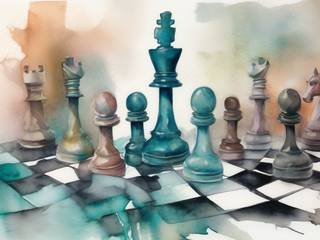
A moving piece leaves a permanent trail of its team's color along its path. A captured piece leaves a splash where it stood, then flies off the board in the direction its attacker was moving, faster still, and vanishes a few seconds after it crosses the edge. By the end of a long match, the board is layered with every path either side ever took.
The frame
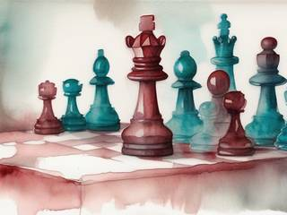
At any moment, one button saves the board, its pieces and all its stains, with a thin margin of the background around them, as a square PNG of 512 by 512 pixels. That's the whole collection: pictures in a folder of your own, which open anywhere.
Controls and interface
You don't play; you watch, and step in only when you want to. The four controls are always on screen in the left column, and each one has a key.
Buttons
New match
Clear the board and start fresh, with new colors for everything, even mid-match
Pause
Pause or resume the current match
Keeping it going
Auto
Checkbox: start a new match 30 seconds after a king falls
Save
Save the board as a PNG
The keyboard shortcuts are N for a new match, Space to pause, A for the auto-restart checkbox and S to save, and any key starts the next match once one has ended. The left column always shows the title, the match name, whose turn it is (or who won), the state of play (normal, check or checkmate) and, with auto-restart on, the countdown to the next match. Its text is colored to contrast with whatever background the match rolled, so it's always readable.
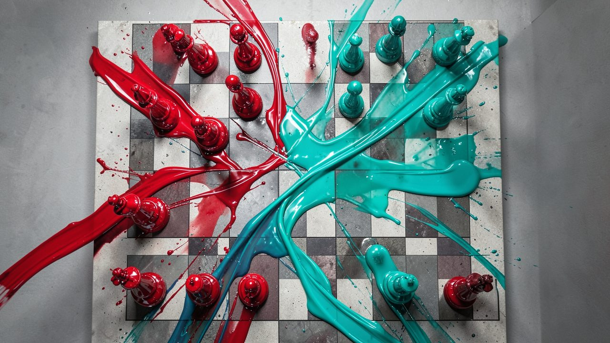
"Every move leaves a trail of its team's paint that never fades, so the board records the whole match."
Game layers
01 · Moment-to-moment
One move, one stroke
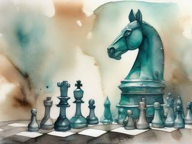
A piece is chosen, and it glides to its square over one to three seconds, on an easing curve picked at random each time: one move eases in gently, the next lurches and settles. Its trail paints in behind it. Half a second after it lands, the other side moves.
02 · Low metagame
A match, a canvas
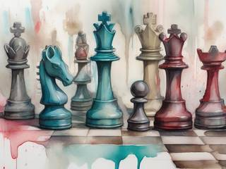
A match runs from the opening position until a king is captured. The labels then announce which team won, and the finished board waits for you to look at it, save it, or start the next one.
Random play can run out of ways to end: two bare kings can never take each other. When neither king can ever fall, the match is called a draw and ends the same way.
03 · High metagame
Your own gallery
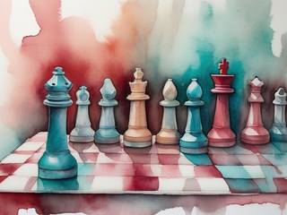
There's no score across matches, no record of wins and nothing to build up. The only thing that carries over is what you chose to keep: the saved pictures, in your own folder, in a format anything can open. It's the simplest possible living history, and every one of them is unique.
04 · Practical game flow
Open it and leave it
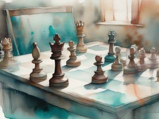
Open the page and the first match is already underway. Watch for a minute or an evening; tick the auto-restart box and it keeps painting new boards for as long as the window is open. Close it whenever you like. There's nothing to save but the pictures.
Game modes
There's one mode: the self-playing match. With auto-restart on, it becomes an endless exhibition:
New colorsBoard, background and two teams, all rolled fresh
The matchCoin-toss chess, painting as it goes
A king fallsThe winner is announced; the canvas is finished
Thirty secondsTime to look, or to save the picture
Then it starts again, in colors nobody has picked yet.
Features and mechanics
The heart of it
Every move paints
The trails and splashes are painted straight into the board's own image rather than kept as separate objects on screen. A match of three hundred moves costs no more to show than a match of three, and the canvas stays smooth however crowded it gets.
Captures are the loudest strokes. The captured piece leaves a splash on its square and is flung off the board along the attacker's line of movement, with an extra kick of one and a half to two times its speed, and disappears three seconds after it leaves the screen. Some matches end tidy, with a few long trails; others end in a storm of splashes.
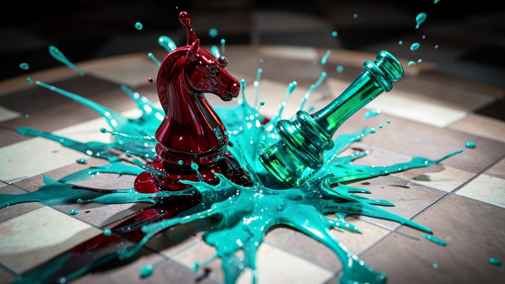
"A captured piece leaves a splash where it stood and flies off the board along its attacker's line of movement."
Players who don't care who wins
The coin-toss AI
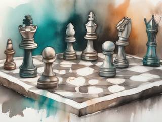
Both sides think the same way, in this order, every turn:
Step
What it decides
Can I take the king?
If any piece can, it always does, and the match is over.
Can I take anything?
If a piece can capture, a coin toss decides whether it attacks or just moves.
Where do I go?
A random piece with legal moves goes forward or diagonally forward 60% of the time, sideways 30% and backward 10%, as far as that piece is allowed to move that way.
That's enough to make every match different and nearly every one absurd: queens wander off, pawns march, and kings are lost to whatever happens to be standing next to them. The lean toward moving forward keeps the two sides meeting in the middle, where the paint piles up.
Randomness with rules
A palette per match
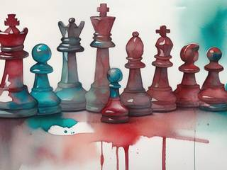
Pure random colors would give a lot of mud. Each color here is random only inside a range chosen to look good: the board is always muted with dark dark squares and pale light ones, the background always dim, the teams always strong and kept apart by an offset in hue, and the labels always picked to contrast with what's behind them.
Within those limits, anything goes, so a match can come out as a quiet ink drawing in two blues or a loud clash of lime and magenta, and the team names on the board tell you which.
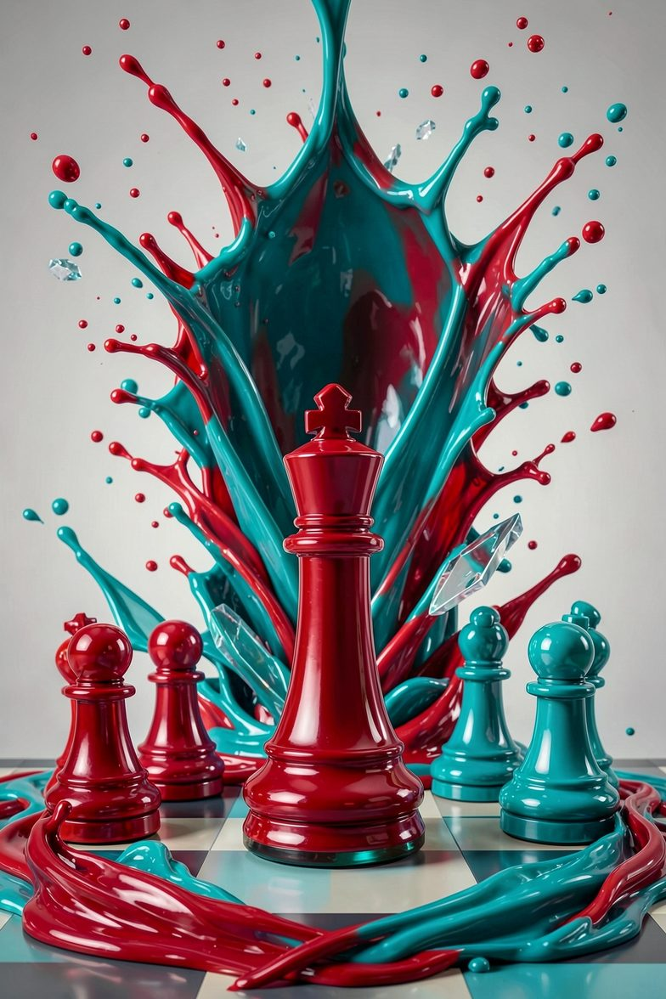
Gallery placard
Auto Art Chess: Self-Playing Canvas Duels
Dark Red vs Bright Cyan. Paint on chessboard, 512 × 512.
Painted by two players who never once tried to win. Thirty-two pieces, several hundred strokes, one fallen king. The artists have already started on the next one.